rnorm(10) [1] -0.06554887 2.45506909 -0.82091188 -0.89380659 -1.68581459 -1.07849432
[7] 1.57151268 -0.83589628 0.97223681 -0.91984034Today we are going to learn how to apply different machine learning methods, beginning with clustering:
The goal here is to find groups/ clusters in you input data.
First, I will make up some data with clear groups. For this I will use the rnorm() function:
rnorm(10) [1] -0.06554887 2.45506909 -0.82091188 -0.89380659 -1.68581459 -1.07849432
[7] 1.57151268 -0.83589628 0.97223681 -0.91984034hist(rnorm(10000, mean = 3))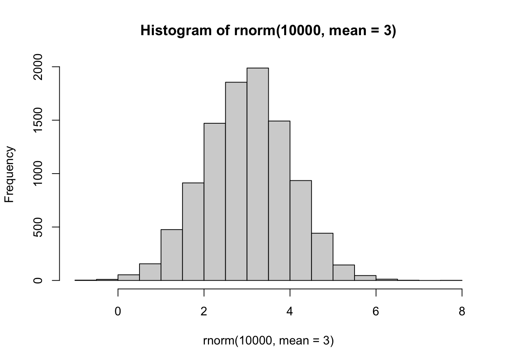
You can put this into a vector using ‘c()’ function.
n=30
x <- (c(rnorm(n, mean =-3), rnorm(n, mean =3)))
y <- rev(x)
z <- cbind(x,y)
head(z) x y
[1,] -2.6637073 2.308151
[2,] -0.5440068 2.998698
[3,] -3.1254938 2.992848
[4,] -3.7190688 2.006665
[5,] -4.0638829 2.126221
[6,] -3.9847338 3.960522plot(z)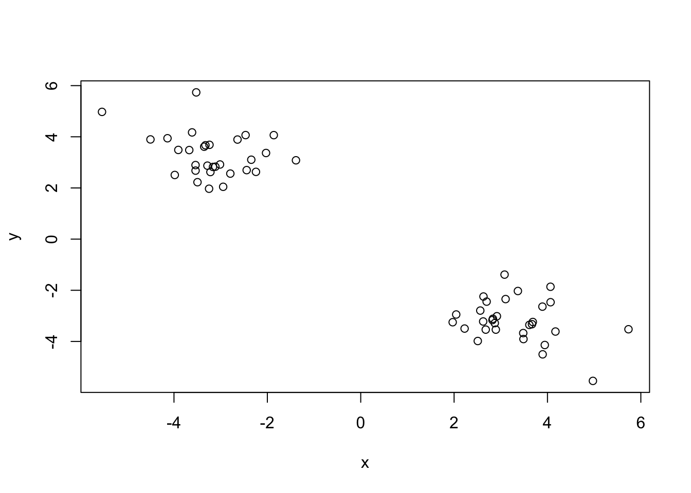
Use the kmeans() dunction k to 2 and nstart=20
Inspect/print results
Q. How many points are in each cluster? Q. What ‘components’ of your results - cluster size? - cluster alignment/membership? - cluster center?
km <- kmeans(z, centers =2)
kmK-means clustering with 2 clusters of sizes 30, 30
Cluster means:
x y
1 2.892891 -3.137125
2 -3.137125 2.892891
Clustering vector:
[1] 2 2 2 2 2 2 2 2 2 2 2 2 2 2 2 2 2 2 2 2 2 2 2 2 2 2 2 2 2 2 1 1 1 1 1 1 1 1
[39] 1 1 1 1 1 1 1 1 1 1 1 1 1 1 1 1 1 1 1 1 1 1
Within cluster sum of squares by cluster:
[1] 34.10692 34.10692
(between_SS / total_SS = 94.1 %)
Available components:
[1] "cluster" "centers" "totss" "withinss" "tot.withinss"
[6] "betweenss" "size" "iter" "ifault" Results in kmeans object km
attributes(km)$names
[1] "cluster" "centers" "totss" "withinss" "tot.withinss"
[6] "betweenss" "size" "iter" "ifault"
$class
[1] "kmeans"cluster size?
km$size[1] 30 30cluster assignment/memebership?
km$cluster [1] 2 2 2 2 2 2 2 2 2 2 2 2 2 2 2 2 2 2 2 2 2 2 2 2 2 2 2 2 2 2 1 1 1 1 1 1 1 1
[39] 1 1 1 1 1 1 1 1 1 1 1 1 1 1 1 1 1 1 1 1 1 1cluster center?
km$centers x y
1 2.892891 -3.137125
2 -3.137125 2.892891Q. Plot x colored by the kmeans cluster assignment add cluster centers as blue points
plot(z,col="red")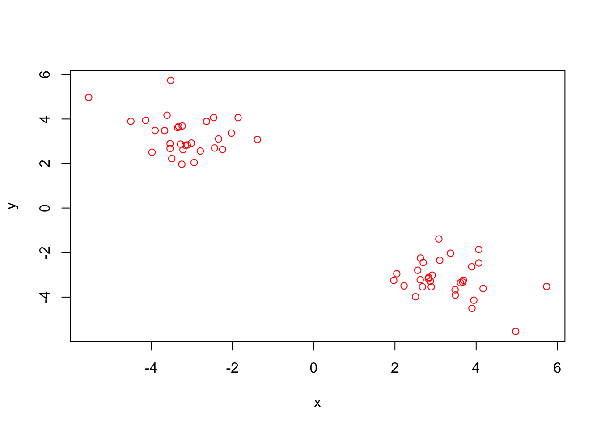
plot(z,col= c("red", "blue"))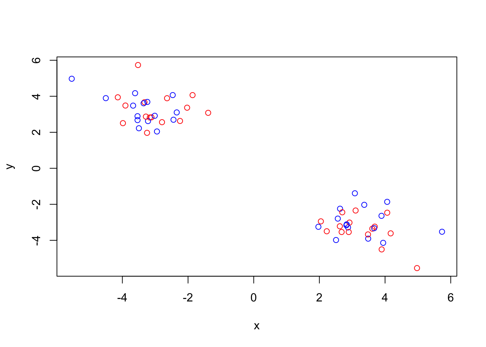
R will re-cycle the shorter color vector to be the same length as the longer (number of data points) in it.
plot(z, col=100)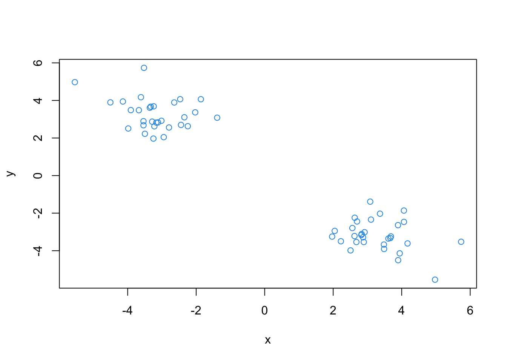
plot(z, col=km$cluster)
points(km$centers, col="blue", pch=18, cex=3)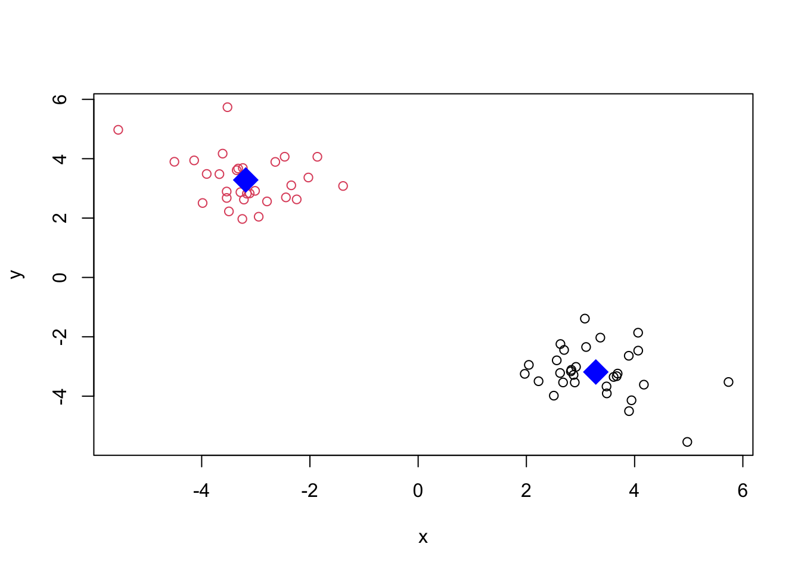
Q. Can you turn kmeans and ask for 4 clusters please and plot the results like we have done above?
pm <- kmeans(z, centers =4)
pmK-means clustering with 4 clusters of sizes 30, 5, 10, 15
Cluster means:
x y
1 2.892891 -3.137125
2 -3.408938 3.858909
3 -2.187932 2.989420
4 -3.679316 2.506532
Clustering vector:
[1] 3 3 4 4 4 2 3 4 4 4 4 4 4 4 2 4 3 4 4 3 3 3 4 2 3 2 3 2 4 3 1 1 1 1 1 1 1 1
[39] 1 1 1 1 1 1 1 1 1 1 1 1 1 1 1 1 1 1 1 1 1 1
Within cluster sum of squares by cluster:
[1] 34.106921 1.135242 4.984567 7.200223
(between_SS / total_SS = 95.9 %)
Available components:
[1] "cluster" "centers" "totss" "withinss" "tot.withinss"
[6] "betweenss" "size" "iter" "ifault" attributes(pm)$names
[1] "cluster" "centers" "totss" "withinss" "tot.withinss"
[6] "betweenss" "size" "iter" "ifault"
$class
[1] "kmeans"plot(z, col=pm$cluster)
points(pm$centers, col="blue", pch=18, cex=1)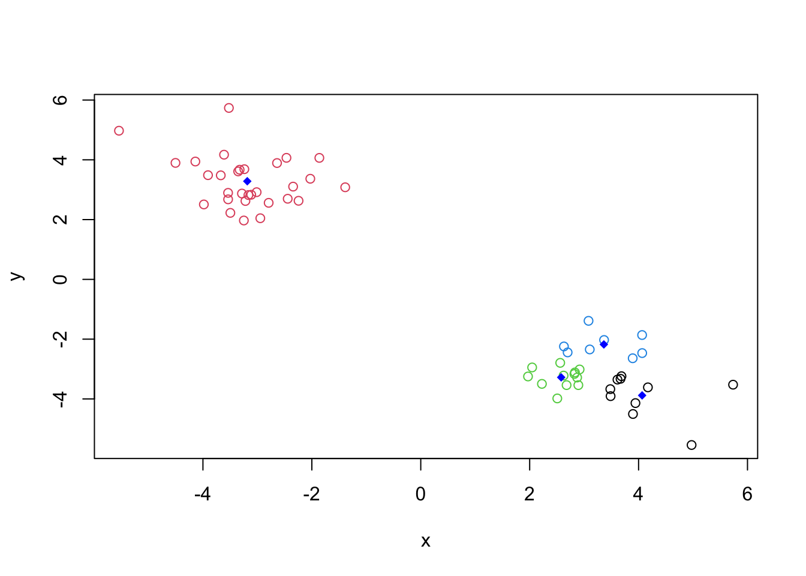
You can add more clusters by replacing the number of centers with kmeans() functions. See above.
Let’s take our some made-up data z and see how hclust works.
First we need a distance matrix for our data to be clustered.
d <- dist(z)
hc <- hclust(d)
hc
Call:
hclust(d = d)
Cluster method : complete
Distance : euclidean
Number of objects: 60 plot(hc)
#To add a line on your plot
abline(h=8, col = "red")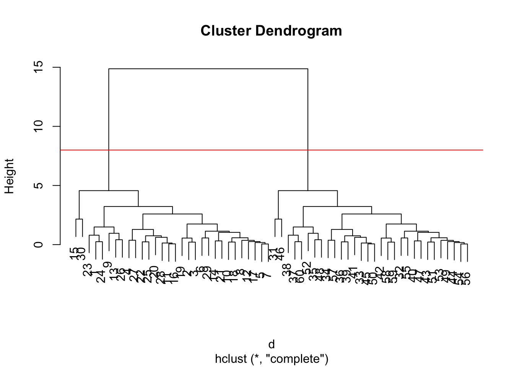
I can get my cluster membership vectory by “cutting the tree” with the cutree() function like so:
grps <- cutree(hc, h=8)
grps [1] 1 1 1 1 1 1 1 1 1 1 1 1 1 1 1 1 1 1 1 1 1 1 1 1 1 1 1 1 1 1 2 2 2 2 2 2 2 2
[39] 2 2 2 2 2 2 2 2 2 2 2 2 2 2 2 2 2 2 2 2 2 2Can you plot z colored by our hclust results:
plot(z, col= grps)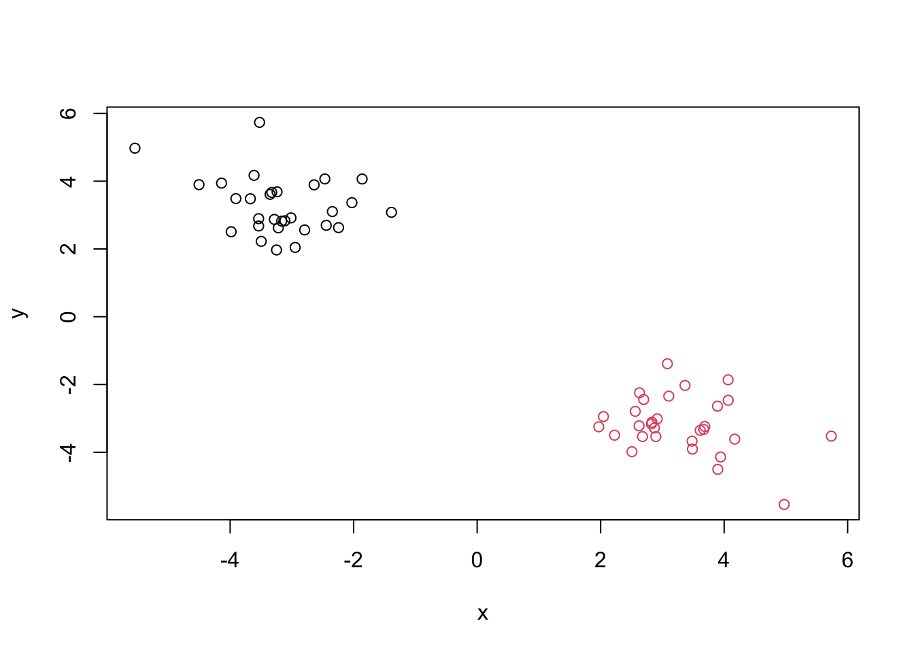
Read data from the UK food consumption in different parts of the UK.
url <- "https://tinyurl.com/UK-foods"
x <- read.csv(url, row.names=1)
head(x) England Wales Scotland N.Ireland
Cheese 105 103 103 66
Carcass_meat 245 227 242 267
Other_meat 685 803 750 586
Fish 147 160 122 93
Fats_and_oils 193 235 184 209
Sugars 156 175 147 139Q1. How many rows and columns are in your new data frame named x? What R functions could you use to answer this questions?
dim(x)[1] 17 4ncol(x)[1] 4nrow(x)[1] 17Checking your data
## Preview the first 6 rows
head(x) England Wales Scotland N.Ireland
Cheese 105 103 103 66
Carcass_meat 245 227 242 267
Other_meat 685 803 750 586
Fish 147 160 122 93
Fats_and_oils 193 235 184 209
Sugars 156 175 147 139# Note how the minus indexing works
rownames(x) <- x[,1]
x <- x[,-1]
head(x) Wales Scotland N.Ireland
105 103 103 66
245 227 242 267
685 803 750 586
147 160 122 93
193 235 184 209
156 175 147 139dim(x)[1] 17 3x <- read.csv(url, row.names=1)
head(x) England Wales Scotland N.Ireland
Cheese 105 103 103 66
Carcass_meat 245 227 242 267
Other_meat 685 803 750 586
Fish 147 160 122 93
Fats_and_oils 193 235 184 209
Sugars 156 175 147 139Q2. Which approach to solving the ‘row-names problem’ mentioned above do you prefer and why? Is one approach more robust than another under certain circumstances? The ‘row.names()’ function would be the best approach to solve the problem because the output appears more organized and mucn more cleaner. Yes, this approach is more robust than the other.
x <- read.csv(url, row.names=1)
head(x) England Wales Scotland N.Ireland
Cheese 105 103 103 66
Carcass_meat 245 227 242 267
Other_meat 685 803 750 586
Fish 147 160 122 93
Fats_and_oils 193 235 184 209
Sugars 156 175 147 139Q3: Changing what optional argument in the above barplot() function results in the following plot? You change the beside = function from TRUE (T) to FALSE (F) in the barplot() function results in the following plot.
barplot(as.matrix(x), beside=F, col=rainbow(nrow(x)))
Q5: Generating all pairwise plots may help somewhat. Can you make sense of the following code and resulting figure? What does it mean if a given point lies on the diagonal for a given plot?
A so-called “Pairs()” function
pairs(x, col=rainbow(10), pch=16)
Its hard to see structure and trends and even this small data set. How will we ever do this when wh have big datta sets with 1,000s or 10s of thousands of things we are measuring…
Q6. What is the main differences between N. Ireland and the other countries of the UK in terms of this data-set? The main difference between N. Ireland and the other countries of the UK is that N. Ireland has more scattered data compared to the other UK countries which suggests that the data is different than the other data.
Let’s see how PCS deals with thsi dataset. So main functions in base R to do PCA is called prcomp().
pca <- prcomp(t(x))
summary(pca)Importance of components:
PC1 PC2 PC3 PC4
Standard deviation 324.1502 212.7478 73.87622 3.176e-14
Proportion of Variance 0.6744 0.2905 0.03503 0.000e+00
Cumulative Proportion 0.6744 0.9650 1.00000 1.000e+00Let’s see what is in inside this pca object that we created from running prcomp().
attributes(pca)$names
[1] "sdev" "rotation" "center" "scale" "x"
$class
[1] "prcomp"pca$x PC1 PC2 PC3 PC4
England -144.99315 -2.532999 105.768945 -4.894696e-14
Wales -240.52915 -224.646925 -56.475555 5.700024e-13
Scotland -91.86934 286.081786 -44.415495 -7.460785e-13
N.Ireland 477.39164 -58.901862 -4.877895 2.321303e-13plot(pca$x[,1], pca$x[,2],
col=c("black", "red","blue", "darkgreen"), pch=16,
xlab = "PC1(67,4%)" , ylab = "PC2(29%)" )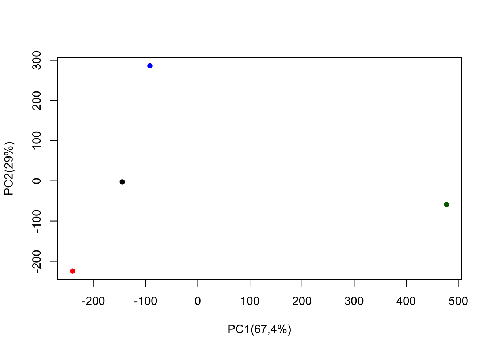
Q7. Complete the code below to generate a plot of PC1 vs PC2. The second line adds text labels over the data points.
# Plot PC1 vs PC2
plot(pca$x[,1], pca$x[,2], xlab="PC1", ylab="PC2", xlim=c(-270,500))
text(pca$x[,1], pca$x[,2], colnames(x))
Q8. Customize your plot so that the colors of the country names match the colors in our UK and Ireland map and table at start of this document.
plot(pca$x[,1], pca$x[,2],
xlab = "PC1(67,4%)" , ylab = "PC2(29%)")
text(pca$x[,1], pca$x[,2], colnames(x), col=c("black", "red","blue", "darkgreen", pch=16))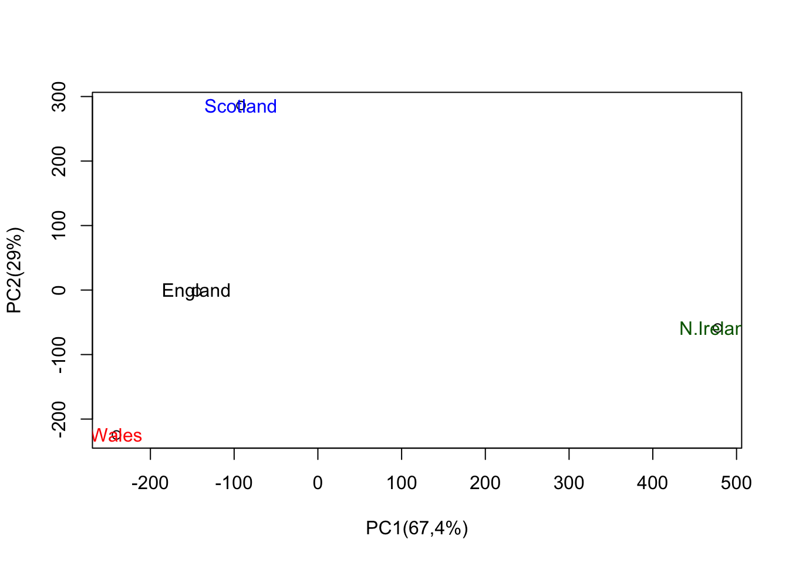
Q9: Generate a similar ‘loadings plot’ for PC2. What two food groups feature prominantely and what does PC2 maninly tell us about?
## Lets focus on PC1 as it accounts for > 90% of variance
par(mar=c(10, 3, 0.35, 0))
barplot( pca$rotation[,2], las=2 )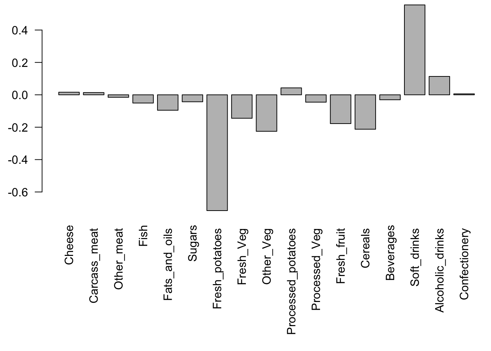
The two food groups Fresh_potatoes and Soft_drinks. PC2 tells us about the food of the best possible loading scores in all UK countries in which the best possible loading score for fresh potatoes is Scotland and N. Ireland, England, and Wales have the best loading score in soft drinks.